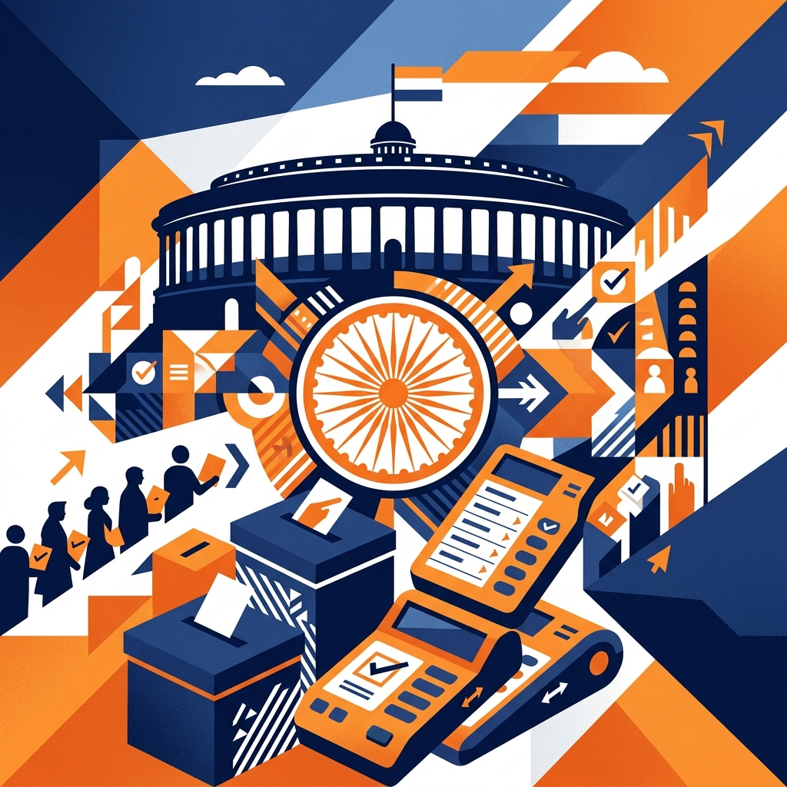

From voter registration to counting of votes — explore every step of the world's largest democratic exercise, interactively.

India follows a First-Past-the-Post (FPTP) system within a Parliamentary democracy. Citizens elect representatives to the Lok Sabha (lower house) and State Assemblies every five years.
India is a sovereign democratic republic. The President is the constitutional head, but real executive power rests with the Prime Minister and the Cabinet.
General Elections (Lok Sabha) elect 543 MPs. State Assembly Elections (Vidhan Sabha) elect MLAs for each state legislature.
India is divided into 543 Parliamentary constituencies. Each constituency elects one Member of Parliament (MP) using the FPTP method — the candidate with the most votes wins.
India uses Electronic Voting Machines (EVMs) with VVPAT (Voter Verified Paper Audit Trail) slips to ensure transparency and accuracy in vote counting.
Every Indian citizen aged 18 years and above has the right to vote, regardless of caste, religion, gender, or economic status.
Your vote is completely private. No one — not the government, party, or anyone else — can know whom you voted for. This protects voters from coercion.
Elections in India follow a precise, constitutionally mandated sequence. Click each step to explore details.
Free and fair elections are protected by independent institutions with constitutional authority.
An autonomous constitutional body established in 1950. Responsible for administering elections to Parliament, state legislatures, and the offices of President and Vice-President.
Heads the ECI. Appointed by the President of India. Can only be removed through a process similar to a Supreme Court judge — ensuring independence.
Each constituency has a Returning Officer (RO), usually a senior IAS officer. Responsible for conducting the election in that constituency — accepting nominations, organizing polling, and declaring results.
Security for polling stations is managed by central paramilitary forces (CRPF, BSF) and state police to prevent booth capturing and ensure peaceful polling.
The ECI deploys General Observers (IAS) and Expenditure Observers (IRS) to monitor campaigning, spending, and polling day conduct in every constituency.
From registering to casting your ballot — here's everything you need to know as a first-time or returning voter.
Once the election schedule is announced, the Model Code of Conduct (MCC) kicks in immediately — binding on all parties and candidates.
Answer 8 questions and see how much you've learned about India's election process.